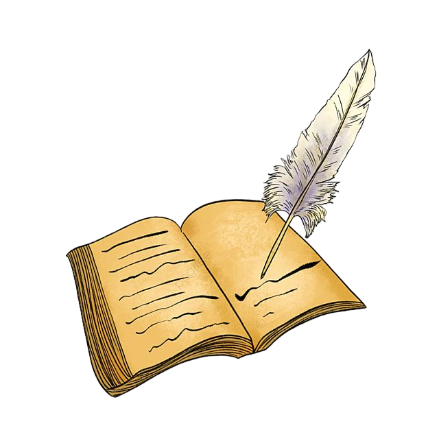
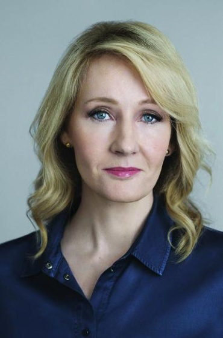

Автор книг Дж.К.Роулинг

Дж.К. Роулинг – автор мирового бестселлера семитомной истории о Гарри
Поттере, впервые опубликованной с 1997 по 2007 год. Книги изданы более
чем в 200 странах мира общим тиражом, превышающим 500 миллионов
экземпляров, и переведены на 80 языков. По ним сняты восемь
блокбастеров кинокомпанией Warner Bros. Дж.К. Роулинг – автор трех
дополнительных книг, изданных с благотворительной целью. Одна из них,
«Фантастические твари и где они обитают», первоначально написанная в
помощь благотворительному фонду Comic Relief как учебник для Хогвартса,
вдохновила кинокомпанию Warner Bros. на создание пятисерийной
киноэпопеи, первая часть которой вышла в 2016 году. Второй фильм
«Фантастические твари: Преступления Грин-де-Вальда» вышел в прокат в
ноябре 2018 года. Дж.К. Роулинг сотрудничала с драматургом Джеком
Торном и режиссером Джоном Тиффани в создании театральной постановки
«Гарри Поттер и проклятое дитя. Части первая и вторая», премьера
которой состоялась в лондонском Вест-Энде в 2016 году, а на Бродвее в
начале 2018 года, в 2019 году прошли премьеры в других странах. Дж.К.
Роулинг также является автором «Случайной вакансии» – романа для
взрослых читателей, вышедшего в 2012 году, – и под псевдонимом Роберт
Гэлбрейт автором детективов о сыщике Корморане Страйке, по которым
компанией Brontё Film & Television снят сериал для телеканалов BBC
и HBO. Четвертая книга этой серии вышла осенью 2018 года.